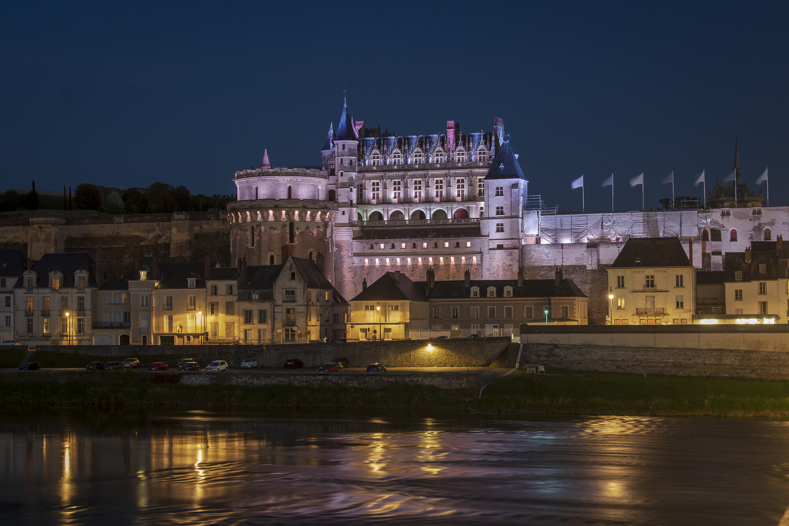
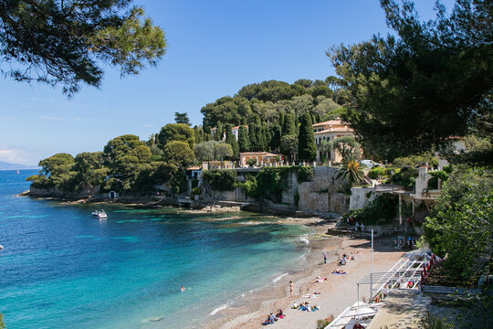

Eiffel Tower, Paris

English: The Eiffel Tower is one of the most famous landmarks in the world and a must-visit attraction in Paris.
Français: La tour Eiffel est l'un des monuments les plus célèbres du monde et une attraction incontournable à Paris.
Ελληνικά: Ο Πύργος του Άιφελ είναι ένα από τα πιο διάσημα μνημεία στον κόσμο και ένα αξιοθέατο που πρέπει να επισκεφθείτε στο Παρίσι.
Mont Saint-Michel

English: A stunning island commune in Normandy, known for its medieval architecture and breathtaking scenery.
Français: Une magnifique commune insulaire en Normandie, connue pour son architecture médiévale et ses paysages époustouflants.
Ελληνικά: Ένα εκπληκτικό νησιωτικό χωριό στη Νορμανδία, γνωστό για την μεσαιωνική του αρχιτεκτονική και τα εντυπωσιακά τοπία.
Palace of Versailles
<
English: The opulent Palace of Versailles is a symbol of France’s royal history and grandeur.
Français: Le somptueux château de Versailles est un symbole de l'histoire royale et de la grandeur de la France.
Ελληνικά: Το πολυτελές Ανάκτορο των Βερσαλλιών είναι ένα σύμβολο της βασιλικής ιστορίας και του μεγαλείου της Γαλλίας.
Loire Valley
English: Known for its stunning castles, vineyards, and charming villages, the Loire Valley is a must-visit region in France.
Français: Connue pour ses magnifiques châteaux, vignobles et charmants villages, la vallée de la Loire est une région incontournable en France.
Ελληνικά: Γνωστή για τα εκπληκτικά κάστρα της, τους αμπελώνες και τα γοητευτικά χωριά της, η κοιλάδα του Λίγηρα είναι ένας απαραίτητος προορισμός στη Γαλλία.
French Riviera
English: A glamorous Mediterranean coastline known for its luxury, beaches, and vibrant nightlife.
Français: Une côte méditerranéenne glamour, connue pour son luxe, ses plages et sa vie nocturne animée.
Ελληνικά: Μια λαμπερή μεσογειακή ακτογραμμή, γνωστή για την πολυτέλεια, τις παραλίες και τη ζωντανή νυχτερινή ζωή της.